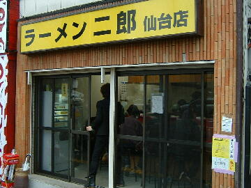
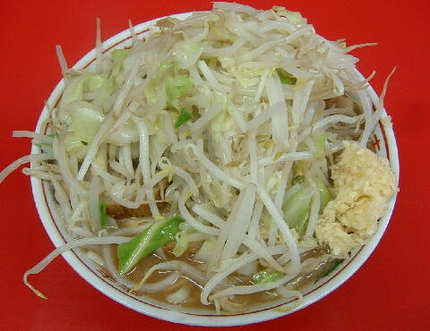
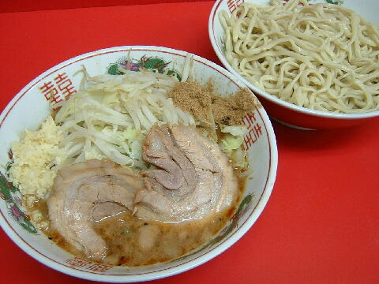

仙台市 青葉区 立町 2-8
月
11：30〜14：30 17：00〜21：00
日 11：30〜19：30

小ラーメン 690円、小豚ラーメン 790円、小Wラーメン 890円
大ラーメン 790円、大ラーメン豚 890円、大ラーメンW 990円
生卵 50円、キムチ 50円、生姜 50円（現金）
麺増し 50円以上（現金）
黒烏龍茶 170円
生姜と麺増しの売上は寄付される。
店員は、元AKB48のマリコ様が好きな店主と助手とバイト。
ちなみにマリコ様は2014/9/9に二郎が気になるとツイートしており、なんと両想いなのである。
ブラックペッパー（ギャバン）、トウガラシ、醤油ダレ
レンゲ有、ティッシュ有、名刺無。
BGMは、Date fm （エフエム仙台）だったと思う。
トッピングは二郎基準。
仙台は食券を買ってから行列に並ぶ。
ラーメン二郎 仙台店 仙台店のTwitter
「ラーメン二郎 仙台」でヤフー検索
「ラーメン二郎 仙台」でヤフーリアルタイム検索
「ラーメン二郎 仙台」でグーグル検索

小豚ラーメン ニンニク
麺は、小麦がギュッと詰まった直系二郎の麺だっちゃ。コシがあってモチモチしてるっぺ。
ぶたは、でかいバラロールが野菜の下にうんと。個人的には牛タンよりもうっしい。
スープは、独眼で見てもまんず乳化しているが、後味ははっぱりしている。
ヤサイは、モヤシ7：キャベツ3の割合。ホクホクの茹であがり。コールなしでもいっぺ。ずんだより良い。
ニンニクは、シッカリと辛いニンニク。
これで残したら おしょすいちゃ！

小ラーメン＋つけめん ニンニク
つけめんは、オーダーを聞かれた時につけめんという。席に座ったら食券と一緒に100円をカウンターに置く。
トッピングはラーメンと同じ。
つけ汁は、濃厚なのに丁度良い酸味でさぱっり。胡麻も入っていた。あと、魚粉もあるので飽きがこない。
麺は、冷されてシコシコ感が増していて箸がすすむ。つけ麺の麺カタメはできない（ラーメンはできる）。
暑い時期の昼限定
ＰＣ店